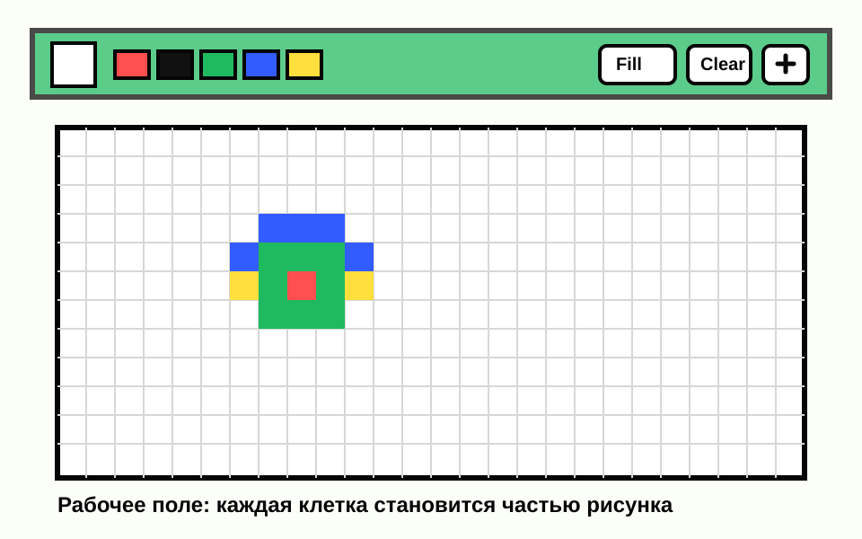
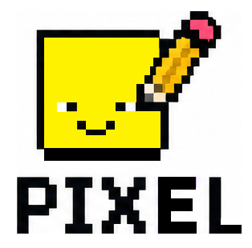
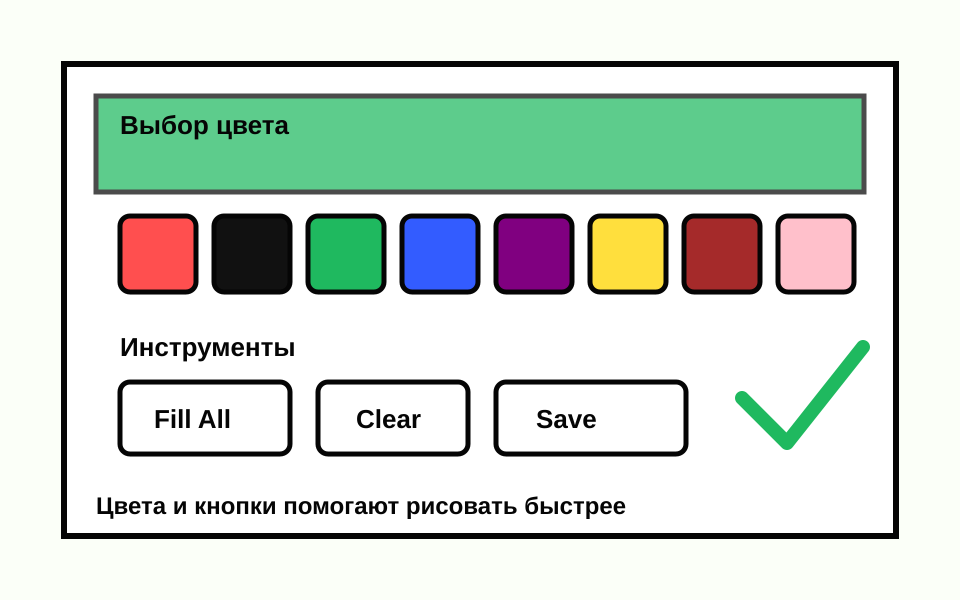
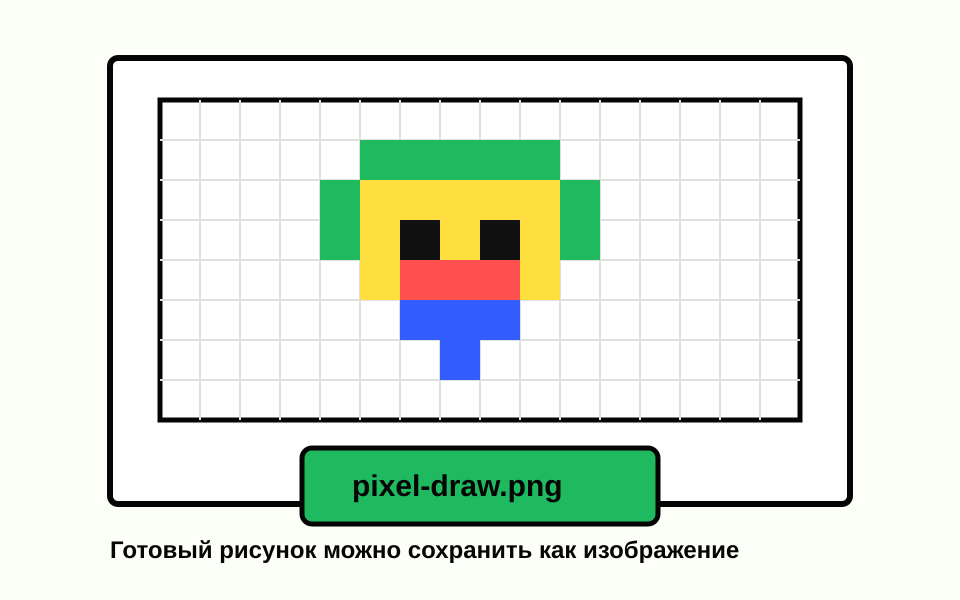

Рабочая сетка
Главная область редактора, где каждая клетка становится частью рисунка.

РисоватьPixel editor
Выбирай цвет, закрашивай клетки, очищай поле, заливай всю сетку и сохраняй рисунок. Проект сделан как простой редактор, в котором можно быстро собрать иконку, спрайт или маленький пиксель-арт.
Перейти к рисованию
PIXEL - Draw Your Imagination One Pixel at a Time
Welcome to PIXEL, a simple and fun place where you can create pixel art directly in your browser.
Use the grid to draw icons, characters, game sprites, patterns and small experiments.
Features:
- easy-to-use pixel drawing grid
- multiple colors to choose from
- fill and clear tools for faster drawing
- saving the result as an image
- perfect for beginners and pixel art fans
Start drawing now and turn tiny squares into awesome art.
Screens
Эти изображения показывают основные части редактора: рабочую сетку, панель инструментов и готовый рисунок, который можно сохранить.

Главная область редактора, где каждая клетка становится частью рисунка.

Кнопки цветов помогают быстро переключаться между оттенками.

После работы изображение можно сохранить и использовать отдельно.
How it works
JavaScript добавляет много маленьких блоков. Каждый блок можно закрасить выбранным цветом.
Когда ты нажимаешь на цвет, редактор запоминает его и применяет к следующим клеткам.
Очистка, заливка и сохранение помогают не рисовать все вручную и быстро получить готовый результат.